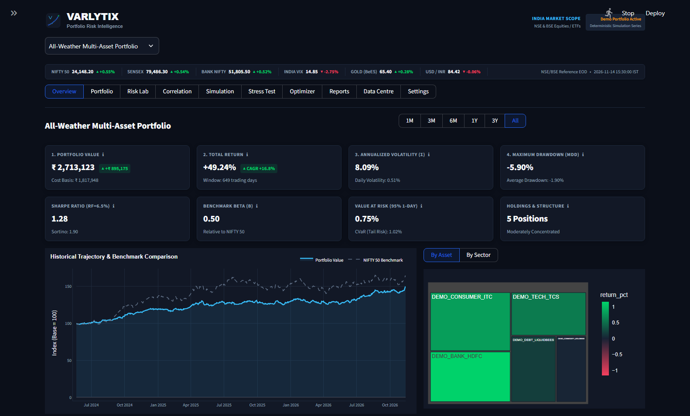

VARLYTIX
QUANT RISK LAB.
A comprehensive quantitative portfolio risk laboratory — modeling parametric and historical VaR, Conditional Value-at-Risk (CVaR), multi-asset correlation heatmaps, Monte Carlo fan simulations, and Markowitz optimization.

INSTITUTIONAL QUANTITATIVE RISK MODELING FOR RETAIL INVESTORS.
Retail investors typically judge portfolios only by total profit, ignoring downside tail risk. VARLYTIX brings hedge-fund grade risk metrics, crisis stress tests, and Monte Carlo forecasting to everyday portfolios.
Core Risk Metrics Lab
Calculates 95% and 99% Historical & Parametric Value-at-Risk (VaR), Expected Shortfall (CVaR), Sharpe Ratio, and Sortino Ratio.
Correlation Matrix Heatmap
Computes Pearson correlation coefficients across holdings to expose hidden concentration risk and cross-asset dependencies.
Monte Carlo Fan Simulator
Executes 10,000 Geometric Brownian Motion simulation paths to model portfolio valuation envelopes over 30 to 252 trading days.
Crisis Stress Testing
Replays historical market shocks (2008 Lehman Crash, 2020 COVID Liquidity Shock) to evaluate drawdown vulnerability.
Markowitz Efficient Frontier
Solves quadratic optimization equations to determine optimal asset weightings for minimum variance or maximum Sharpe ratio.
ReportLab PDF Dossier
Compiles executive-grade quantitative risk audit reports with vector charts and stress-test scorecards.
HOW IT WORKS.
High-performance SciPy and NumPy matrix calculation engine wrapped in Streamlit.
Portfolio Ingest
Loads holdings and transactions; fetches adjusted close prices.
Log Returns
Computes log returns, covariance matrix, and volatility vector.
VaR/CVaR Math
Calculates parametric normal and historical empirical quantiles.
Monte Carlo Run
Generates stochastic price paths via Cholesky decomposition.
Optimization & PDF
Solves Markowitz quadratic frontier; generates audit PDF.
APPLICATION SCREENSHOTS.
Live screens captured from the running application. Click any image to view full size, or follow setup instructions in the GitHub repository.
QUANTITATIVE SPECS & VERIFIED CAPABILITIES.
Key modules, rules, safety checks, and automated test results documented in the repository.
| Risk Metric | Mathematical Formulation | Verified Output |
|---|---|---|
| Value-at-Risk (VaR) | Parametric (Gaussian) & Historical Simulation | Daily 95% & 99% portfolio maximum loss |
| Conditional VaR (CVaR) | Expected Shortfall beyond alpha threshold | Tail-risk average expected drawdown |
| Monte Carlo Engine | Cholesky Decomposition + Geometric Brownian Motion | 10,000 correlated price trajectories |
| Test Coverage | Pytest unit & mathematical accuracy tests | 30 / 30 automated tests passed |
CORE TECHNOLOGIES.
Frameworks, databases, visualization tools, and testing libraries used in VARLYTIX.
FUTURE ENHANCEMENTS.
Upcoming improvements planned for VARLYTIX.
EXPLORE SOURCE & DOCS.
View the complete codebase, sample datasets, quick-launch scripts, and automated test suites on GitHub.